Explore Bilbao
A Brief History
Bilbao expanded from a medieval river port in the Basque Country into an industrial city built on iron ore, shipbuilding, and banking along the Nervión estuary. The 1997 Guggenheim Museum anchored waterfront renewal, while casco viejo lanes, the Vizcaya transporter bridge, and San Mamés stadium record regional identity and 20th-century labour history.
Attractions Map
Top Sights & Activities
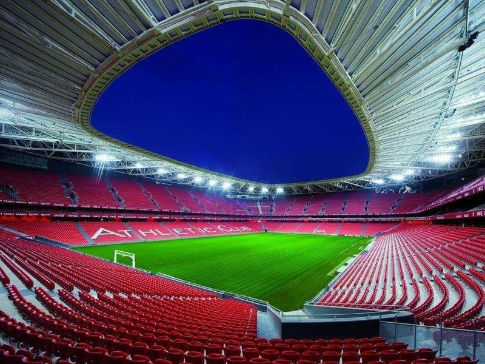
San Mamés Stadium
Estadio de San Mamés, also known as The Cathedral, is a must-visit in Bilbao. It's the largest football stadium in the Basque Country and the 8th largest in Spain. The stadium has received accolades such as the World Design Awards 2020. The site forms part of San Mamés Stadium's documented civic and cultural landscape within Bilbao, with archives and visitor information available from municipal or regional heritage authorities.
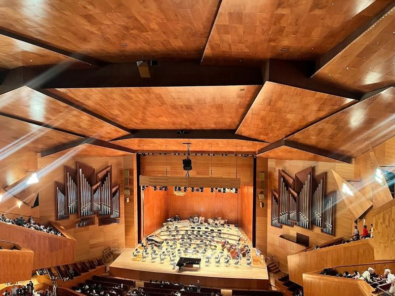
Palacio Euskalduna
Palacio Euskalduna is a remarkable performance and convention center located in the heart of Bilbao. It was built on the site of a former shipyard and designed by renowned architect Frank O. Gehry, known for his groundbreaking work on the Guggenheim Museum Bilbao. Inaugurated in 1999, this unique building represents a vessel under construction and houses a conference center, concert hall, as well as other facilities like cafes, restaurants, and shopping centers.
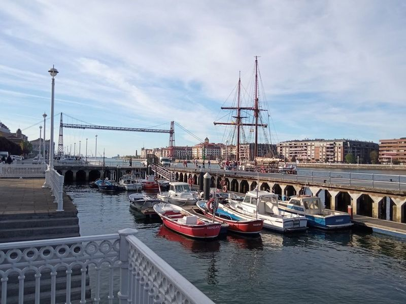
Las Arenas
Las Arenas, also known as Areeta, is a charming and upscale neighborhood in Getxo that beautifully blends history with modernity. Nestled along the Nervión River Estuary, this area boasts elegant villas and a picturesque promenade that leads to the Vizcaya Bridge, the oldest transporter bridge globally. Las Arenas Beach is a vibrant hub for beach tennis enthusiasts and water sports lovers alike.
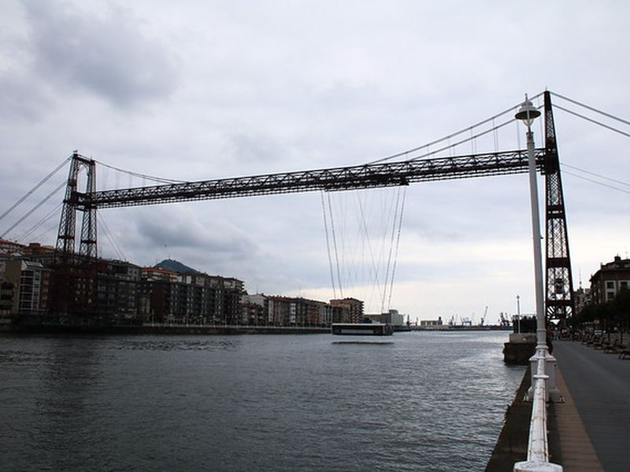
Vizcaya Bridge
A UNESCO World Heritage site, this transporter bridge offers a unique way to cross the Nervion River and provides great views of the surrounding area. The site forms part of Vizcaya Bridge's documented civic and cultural landscape within Bilbao, with archives and visitor information available from municipal or regional heritage authorities.
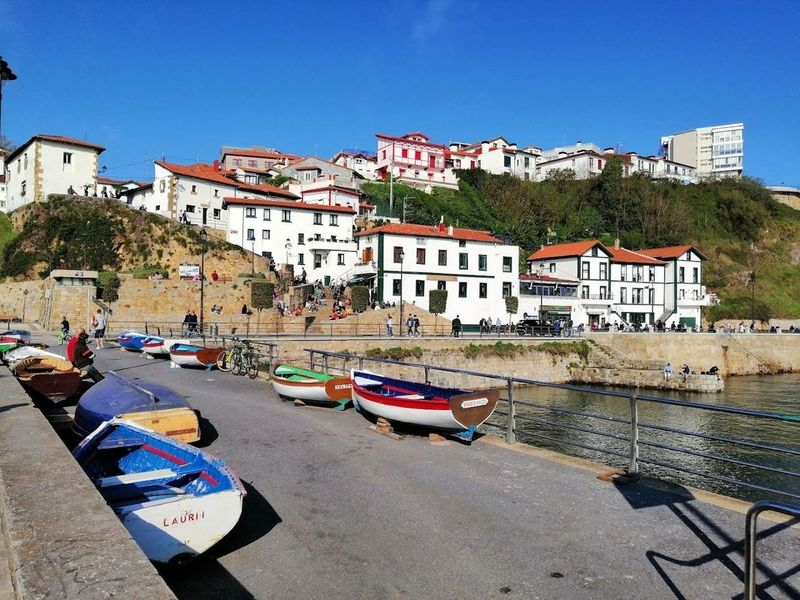
Puerto Viejo
Puerto Viejo de Algorta is a charming old fishing village located along the coast, offering beautiful views and a relaxed atmosphere. It's a popular spot for locals to visit on weekends, with its beach and numerous restaurants serving delicious seafood dishes. The area is also known for its invention of kalimotxo, making it an ideal place to enjoy pintxos or have a leisurely lunch. Visitors can take a stroll through the village and admire the historic mansions that contribute to its fame.
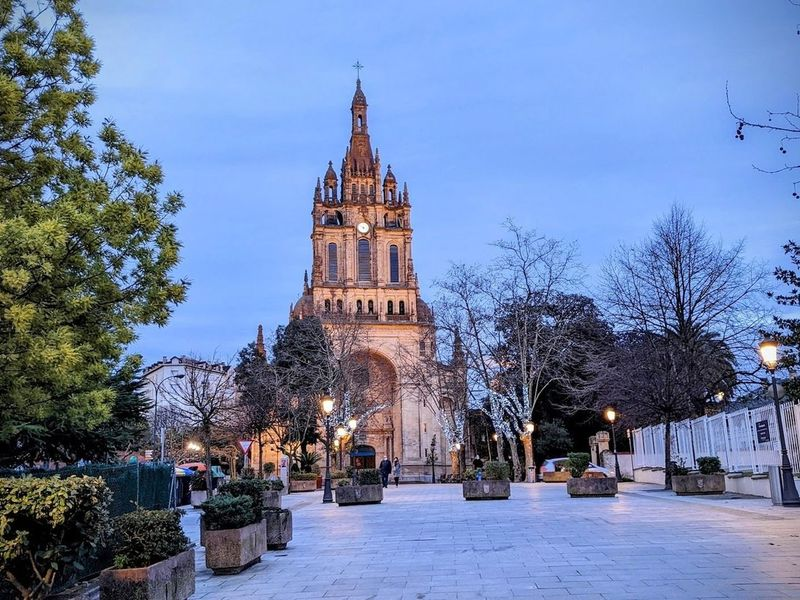
Begoñako Basilika
Begoñako Basilika, also known as the Basilica of Begona, is a 16th-century church located in Bilbao, Spain. It is dedicated to the Virgin of Begona, the patron saint of Biscay. The basilica features mostly Gothic architecture and houses an ornate gold altarpiece.
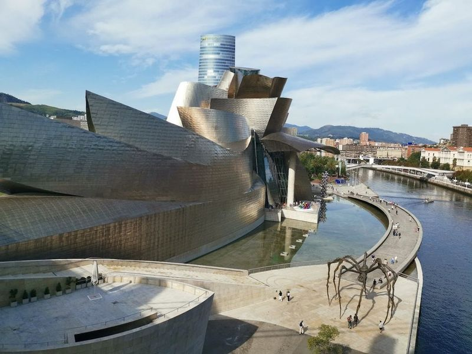
PUPPY
Puppy, a charming and sculpture by the renowned American artist Jeff Koons, captures the hearts of all who encounter it. This delightful piece is designed to resemble an enormous West Highland White Terrier and is adorned with a display of colorful flowers. Positioned at the entrance of the Guggenheim Museum Bilbao, Puppy greets visitors with its playful spirit and whimsical charm, making it a attraction for anyone exploring this cultural landmark.
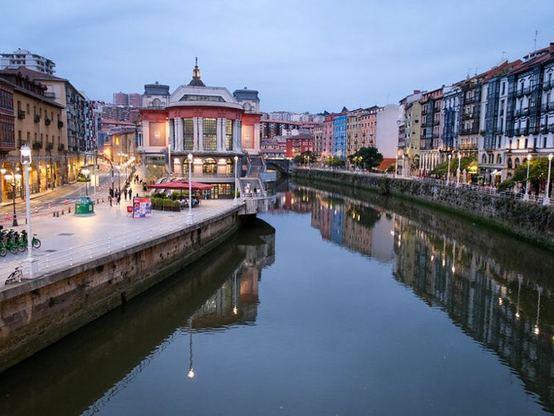
Erriberako merkatua
Also known as the Ribera Market, it is covered markets in Europe, offering a variety of fresh produce, meats, and seafood. The site forms part of Erriberako merkatua's documented civic and cultural landscape within Bilbao, with archives and visitor information available from municipal or regional heritage authorities.
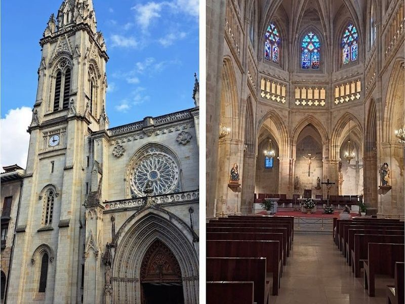
Bilboko Donejakue Katedrala
Bilboko Donejakue Katedrala, a Catholic cathedral dating back to the 14th century, boasts an understated Gothic-revival facade. Visitors can explore impressive art, beautiful stained glass windows, and captivating architecture, including the renowned rose window. The cathedral offers a self-paced tour with informative devices explaining different parts of the building. Notable features include the sacristy and cloister displaying historical vestments and a charming garden.
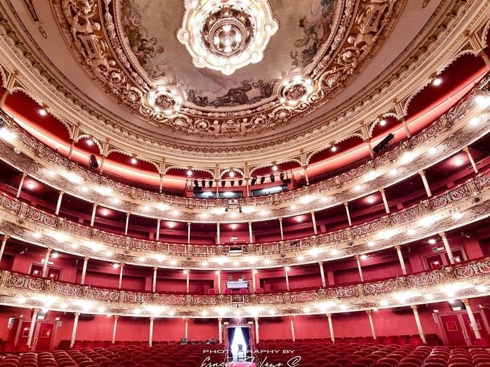
Arriaga Theater
Teatro Arriaga, located in Bilbao, Spain, is a renowned neo-baroque opera house named after Basque composer Juan Crisostomo de Arriaga. Built in 1890, it boasts an opulent design and a rich costume collection. The theater offers guided tours in English, Basque, and Spanish for a nominal fee.
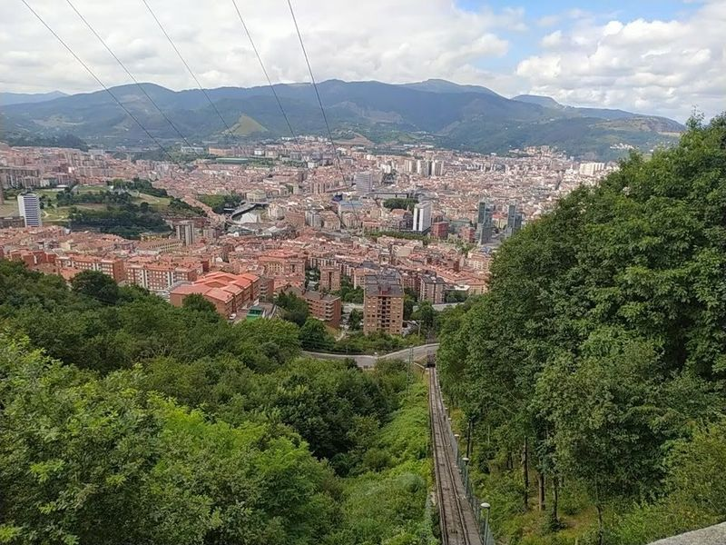
Artxanda viewpoint
When visiting Bilbao, don't miss the Artxanda viewpoint. Situated on the Artxanda mountain range, it offers panoramic views of the city and surrounding mountains. reach the viewpoint by hiking or taking a funicular from the city center. The short 3-minute ride accommodates wheelchairs, bikes, and dogs. Once at the top, find a park and numerous photo opportunities.
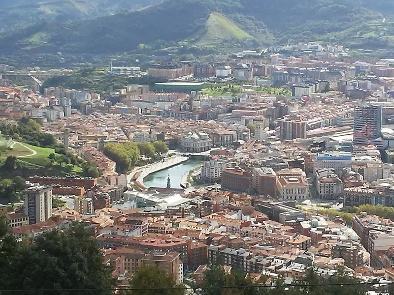
Artxanda Funicular
Ascend to the top of Mount Artxanda in Bilbao with a ride on the Funicular de Artxanda, which has been operating since 1915. This old-styled, red funicular offers panoramic views over Bilbao's center, including sights like the Guggenheim Museum and the city's river. At the top, a spacious park awaits with sculptures and more viewpoints. The first wagon is ideal for photographers looking to capture unobstructed shots.
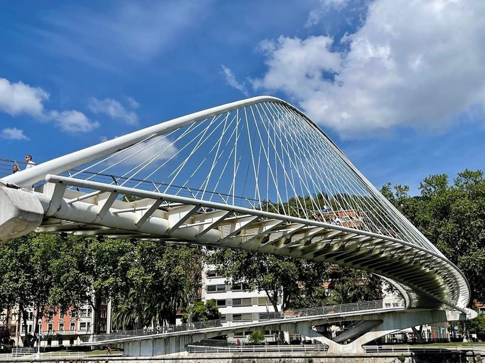
Zubizuri
Zubizuri, also known as the "White Bridge," is a futuristic pedestrian bridge over the Nervión River in Bilbao. Its unique tied-arch design and curved walkway make it a charming addition to the city's modern art and architectural landscape. Designed with a playful touch, the bridge gleams like a majestic swan caught in a snowstorm, adding an element of whimsy to its surroundings.
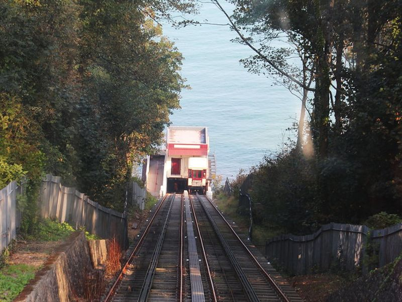
Furnicular bottom station
The site forms part of Furnicular bottom station's documented civic and cultural landscape within Bilbao, with archives and visitor information available from municipal or regional heritage authorities. The site forms part of Furnicular bottom station's documented civic and cultural landscape within Bilbao, with archives and visitor information available from municipal or regional heritage authorities.
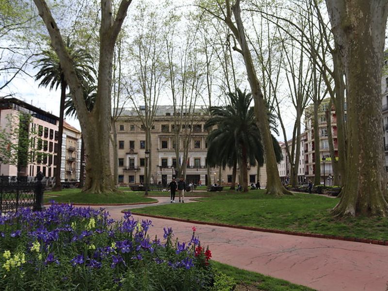
Albiako Lorategiak
The site forms part of Albiako Lorategiak's documented civic and cultural landscape within Bilbao, with archives and visitor information available from municipal or regional heritage authorities. The site forms part of Albiako Lorategiak's documented civic and cultural landscape within Bilbao, with archives and visitor information available from municipal or regional heritage authorities.
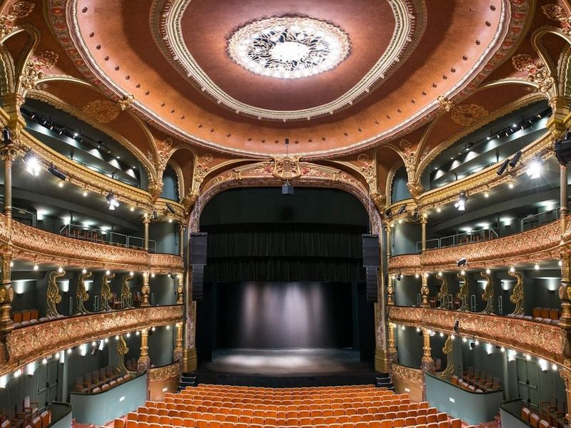
Teatro Campos Elíseos Antzokia
The Teatro Campos Elíseos Antzokia, located in Bilbao, is a example of art nouveau architecture. Designed by local architect Alfredo Acebal and French decorator Jean Batiste Darroguy, the theater's exterior features a prominent arch with rich art nouveau decorations. It has become an integral part of Bilbao's cultural scene, offering a blend of classic and modern facilities for various performances.
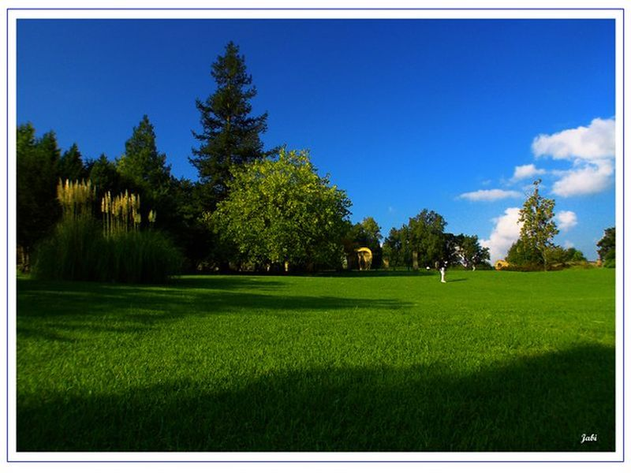
Europa parkea
The site forms part of Europa parkea's documented civic and cultural landscape within Bilbao, with archives and visitor information available from municipal or regional heritage authorities. The site forms part of Europa parkea's documented civic and cultural landscape within Bilbao, with archives and visitor information available from municipal or regional heritage authorities.